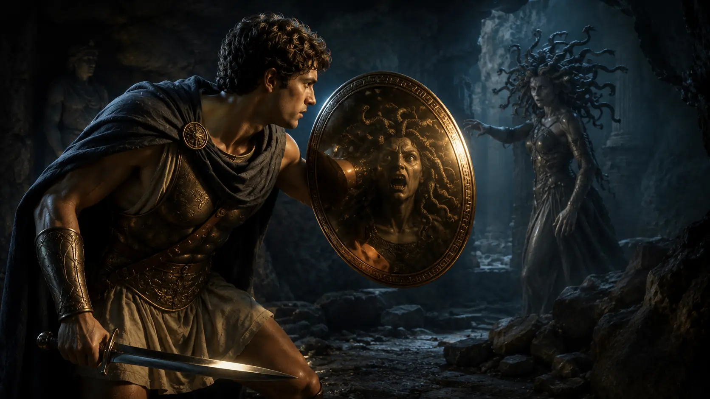

Yunan mitolojisinde kahramanlar çoğu zaman canavarlarla savaşır. Ancak bu canavarların büyük bölümü ne kadar güçlü olursa olsun, en azından görülebilir düşmanlardır. Medusa ise farklıdır. Ona yaklaşmak bile ölüm anlamına gelebilir. Çünkü Medusa'nın gücü kılıcında ya da pençelerinde değil, bakışlarındadır. Onun gözlerine bakan herkes anında taşa dönüşür.
Bu nedenle Medusa'yı öldürme görevi, sıradan bir kahramanlık macerası olarak görülmez. Aslında görevin mantığına bakıldığında başarılması neredeyse imkânsızdır. Bir düşmanla savaşabilmek için önce onu görmeniz gerekir. Ancak Medusa'yı gördüğünüz anda zaten kaybetmiş olursunuz.
Buna rağmen Yunan mitolojisinin en ünlü kahramanlarından biri olan Perseus, Medusa'nın başını kesmeyi başarır. Üstelik bunu yalnızca fiziksel gücüyle değil; tanrıların yardımı, zekâsı ve dikkatli planlaması sayesinde gerçekleştirir. Bu yüzden Perseus'un hikâyesi yalnızca bir canavar avı değil, aynı zamanda Yunan dünyasının kahramanlık anlayışını gösteren en önemli anlatılardan biridir.
Ancak Perseus'un Medusa'nın peşine düşmesinin nedeni kahramanlık arayışı değildir. Her şey, görünüşte masum bir düğün hediyesi isteğiyle başlar. Ve bu istek, genç kahramanı mitolojinin en tehlikeli görevlerinden birine sürükler.
Perseus Medusa'nın Peşine Neden Düştü?
Perseus'un Medusa'yı öldürme görevi gönüllü olarak çıktığı bir macera değildir. Hikâyenin başlangıcında ne bir canavar avı vardır ne de kahraman olma arzusu. Aslında bütün olaylar, Seriphos Adası'nın kralı Polydectes'in kurduğu bir planla başlar.
Perseus'un annesi Danae, Polydectes'in ilgisini çekmektedir. Ancak Perseus annesini korumakta ve kralın ona yaklaşmasını engellemektedir. Polydectes ise bu engeli ortadan kaldırmanın bir yolunu arar. Sonunda görünüşte masum bir çözüm bulur. Bir şölen sırasında konuklarından hediye olarak at getirmelerini ister. Perseus'un böyle değerli bir armağan verecek imkânı yoktur. Genç kahraman mahcup olmamak için kralın isteyeceği herhangi bir hediyeyi getirebileceğini söyler.
İşte hikâyenin yönü tam bu noktada değişir.
Polydectes'in istediği şey sıradan bir hediye değildir. O, Perseus'tan Medusa'nın başını getirmesini ister.
Bu isteğin ardındaki amaç oldukça açıktır. Çünkü Medusa'nın yaşadığı yere ulaşmak bile başlı başına ölümcül bir yolculuktur. Üstelik Medusa sıradan bir düşman değildir. Ona bakan herkes taşa dönüşmektedir. Polydectes büyük ihtimalle Perseus'un bu görevden asla dönemeyeceğini düşünmektedir.
Yunan mitolojisinde kahramanların karşılaştığı görevler çoğu zaman zordur. Ancak Medusa'nın başını getirmek, yalnızca zor değil, mantıksal olarak imkânsız görünen bir görevdir. Bir düşmanı öldürebilmek için ona yaklaşmanız gerekir. Medusa'ya yaklaştığınız anda ise hayatınızı kaybedersiniz. Bu nedenle Perseus'un önündeki sorun yalnızca cesaret göstermek değildir; çözmesi gereken bir bilmece de vardır.
İşte Perseus'un hikâyesini diğer kahramanlık anlatılarından ayıran nokta budur. Bu görev kaba kuvvetle başarılamaz. Ne kadar güçlü olursanız olun Medusa'nın gözlerine baktığınız anda taş kesileceksinizdir. Bu nedenle zaferin anahtarı kılıçtan çok bilgi, hazırlık ve doğru yardımları bulabilmektir.
Ancak Perseus'un önünde başka bir problem daha vardır. Medusa'nın yaşadığı yerin nerede olduğunu bile bilmemektedir. Onu bulabilmek için önce Yunan mitolojisinin en gizemli figürlerinden bazılarıyla karşılaşması gerekecektir. Ve bu yolculuk, kahramanı dünyanın bilinen sınırlarının ötesine taşıyacaktır.
Graialar ve Nimfler: Perseus Medusa'yı Nasıl Buldu?
Perseus'un önündeki en büyük sorun Medusa'yı nasıl öldüreceği değil, onu nasıl bulacağıydı. Çünkü Gorgonların yaşadığı yer sıradan insanların ulaşabileceği bir bölge olarak düşünülmüyordu. Antik Yunan dünyasında Medusa ve kız kardeşleri, dünyanın bilinen sınırlarının ötesinde, insan düzeninin sona erdiği ve bilinmeyenin başladığı bölgelerde yaşardı. Bu ayrıntı yalnızca coğrafi bir bilgi değildir. Yunan mitolojisinde kahramanların dünyanın kenarına doğru yaptığı yolculuklar, aynı zamanda düzenli ve güvenli insan dünyasından kaotik ve tehlikeli alanlara geçiş anlamına gelir. Perseus'un hikâyesi de tam olarak böyle bir yolculuktur.
Ancak Medusa'nın yerini bilenler de sıradan varlıklar değildir. Perseus'un yolu önce Graialar olarak bilinen gizemli kız kardeşlerle kesişir. Graialar Yunan mitolojisinin en tuhaf figürlerinden biridir. Çünkü üç kız kardeş olmalarına rağmen yalnızca bir gözü ve bir dişi paylaşırlar. İçlerinden biri gözü kullanırken diğerleri bekler, sonra göz el değiştirir. Bu sıra dışı ayrıntı ilk bakışta masalsı bir detay gibi görünse de, antik mitolojide bilginin ve görmenin gücüyle ilişkilendirilmiştir. Graialar dünyanın kenarındaki sırları bilen varlıklardır ve Perseus'un aradığı bilgi de onlardadır.
Mitolojiye göre Perseus doğru anı bekler ve Graiaların ortak kullandığı gözü el değiştirirken ele geçirir. Böylece onları kendisine yardım etmeye zorlar. Bu sahne Yunan kahramanlık anlatılarında önemli bir yere sahiptir. Çünkü Perseus burada Herakles gibi fiziksel gücüyle değil, zekâsıyla hareket eder. Medusa'nın hikâyesi baştan sona dikkatle incelendiğinde aslında kaba kuvvetten çok aklın ve stratejinin öne çıktığı görülür. Perseus'un başarısının temelleri de burada atılır.
Graiaların verdiği bilgiler onu daha da ileriye, nimflerin yaşadığı bölgelere götürür. Çünkü Medusa'yı bulmak yeterli değildir; ona yaklaşabilmek için özel araçlara da ihtiyaç vardır. Nimfler Perseus'a mitolojinin en önemli nesnelerinden bazılarını verir. Bunlardan biri görünmezlik sağlayan büyülü bir başlıktır. Bir diğeri Medusa'nın kesik başını güvenli şekilde taşıyabileceği kutsal bir torbadır. Ayrıca kanatlı sandaletler sayesinde olağanüstü hızla hareket edebilme imkânı kazanır.
Bu noktada hikâyenin önemli bir yönü daha ortaya çıkar. Perseus'un başarısı hiçbir zaman yalnızca kendi gücüne bağlanmaz. Yunan mitolojisinde kahramanlar çoğu zaman tanrıların desteğiyle hareket ederler. Özellikle Athena ve Hermes'in Perseus'a yardım etmesi, bu görevin yalnızca kişisel bir macera olmadığını gösterir. Medusa'nın ölümü, tanrıların iradesiyle de bağlantılı büyük bir mitolojik olay hâline gelir.
Artık Perseus'un elinde ihtiyaç duyduğu bilgiler ve araçlar vardır. Ancak bütün hazırlıklara rağmen önündeki asıl problem hâlâ çözülmüş değildir. Çünkü Medusa'nın yaşadığı yere ulaşmak başka, onun karşısında hayatta kalabilmek başka bir meseledir. Sonuçta karşısındaki düşman kılıçla, mızrakla ya da sıradan bir savaş taktiğiyle yenilebilecek bir yaratık değildir. Medusa'nın tek bir bakışı bile yolculuğun başladığı anda sona ermesi anlamına gelecektir. Bu yüzden Perseus'un hikâyesindeki en kritik an, Medusa'nın karşısına çıktığı andır. Ve Yunan mitolojisinin en ünlü sahnelerinden biri de tam burada başlar.
Perseus Medusa'yı Nasıl Öldürdü?
Perseus sonunda Medusa'nın yaşadığı yere ulaştığında karşısında yalnızca bir canavar değil, mitolojinin en ölümcül varlıklarından biri bulunuyordu. Hikâyenin bu bölümü çoğu zaman birkaç cümleyle anlatılır; ancak aslında Yunan mitolojisinin kahramanlık anlayışını en iyi gösteren sahnelerden biridir. Çünkü burada zaferin nedeni güç değil, hazırlık ve stratejidir.
Medusa'nın en büyük avantajı, ona karşı savaşmak isteyen herkesin aynı anda en büyük dezavantajıydı. Bir düşmanla mücadele edebilmek için onu görmeniz gerekir. Ancak Medusa'yı gördüğünüz an taş kesilirsiniz. Bu nedenle Perseus'un çözmesi gereken problem yalnızca bir yaratığı öldürmek değil, onu hiç görmeden öldürmenin yolunu bulmaktı.
İşte Athena'nın verdiği parlak kalkan burada devreye girer. Perseus, Medusa'ya doğrudan bakmak yerine kalkanın yüzeyindeki yansımayı kullanır. Bu ayrıntı yalnızca hikâyenin heyecanını artıran bir unsur değildir. Antik Yunan dünyasında Athena'nın temsil ettiği bilgelik ve stratejik düşünceyle de yakından ilişkilidir. Medusa'nın karşısında kas gücü değil, akıl galip gelir. Yunan dinleyicileri için bu sahnenin önemi de burada yatıyordu.
Kaynakların çoğunda Medusa'nın ve kız kardeşlerinin uyurken yakalandığı anlatılır. Perseus sessizce yaklaşır, yansımaya bakarak yönünü belirler ve doğru anı bekler. Sonrasında tek hamlede Medusa'nın başını keser. Hikâyenin bu bölümü çoğu zaman kahramanın zaferi olarak anlatılsa da, aslında mitin en sıra dışı olaylarından biri hemen ardından yaşanır.
Çünkü Medusa'nın ölümü onun hikâyesinin sonu değildir.
Antik kaynaklara göre Medusa'nın boynundan iki varlık doğar: Kanatlı at Pegasus ve savaşçı Khrysaor. Bu sahne ilk bakışta tuhaf görünebilir. Ancak Yunan mitolojisi sembolik doğumlar ve olağanüstü dönüşümlerle doludur. Burada da ölüm ile yaratılış aynı anda gerçekleşir. Mitolojinin en korkulan figürlerinden birinin ölümü, aynı zamanda en ünlü mitolojik yaratıklardan birinin doğumuna yol açar.
Perseus'un işi ise henüz bitmemiştir. Medusa'nın kesik başı hâlâ ölümcül gücünü korumaktadır. Bu nedenle nimflerin verdiği kutsal torba yalnızca bir eşya değil, görevin tamamlanabilmesi için zorunlu bir araçtır. Perseus başı güvenli şekilde saklar ve tam bu sırada Medusa'nın ölümsüz kız kardeşleri olan Stheno ile Euryale uyanır.
Burada mitolojinin gerilimi yeniden yükselir. Çünkü Perseus Medusa'yı öldürmüş olsa da iki ölümsüz Gorgon hâlâ hayattadır. Üstelik kardeşlerinin ölümünü fark etmişlerdir. Ancak görünmezlik sağlayan kutsal başlık sayesinde Perseus onların elinden kurtulmayı başarır. Böylece görevin en tehlikeli bölümü sona erer.
Yunan mitolojisinde bu sahne yalnızca bir canavarın öldürülmesi olarak görülmez. Perseus'un başarısı, insan zekâsının ve tanrısal desteğin birlikte çalışmasının sonucu olarak yorumlanır. Herakles'in hikâyelerinde fiziksel güç ön plandayken, Perseus'un hikâyesinde planlama ve strateji öne çıkar. Bu nedenle Medusa'nın öldürülmesi, Yunan kahramanlık geleneği içinde kendine özgü bir yere sahiptir.
Ancak Medusa'nın başı hikâyedeki önemini burada da kaybetmez. Tam tersine, bundan sonraki olayların merkezine yerleşir. Perseus'un dönüş yolculuğunda karşılaşacağı düşmanlar, kurtaracağı kişiler ve kazanacağı zaferlerin çoğu doğrudan Medusa'nın başıyla bağlantılıdır. Bu nedenle Medusa'nın ölümü, Perseus destanının sonu değil, yeni bir aşamasının başlangıcıdır.
Medusa'nın Başı Perseus'a Nasıl Güç Kazandırdı?
Perseus'un Medusa'yı öldürmesi büyük bir başarıydı, ancak bu zaferin etkisi yalnızca Gorgonların mağarasından sağ çıkmasıyla sınırlı kalmadı. Medusa'nın kesik başı, ölümünden sonra bile olağanüstü gücünü korumaya devam ediyordu. Bu ayrıntı, Medusa'yı Yunan mitolojisindeki sıradan canavarlardan ayıran en önemli özelliklerden biridir. Çünkü birçok mitolojik yaratık öldürüldükten sonra hikâyeden çekilirken, Medusa'nın gücü ölümünden sonra da anlatının merkezinde kalır.
Perseus, Medusa'nın başını yanında taşırken aslında hem büyük bir tehlikeyi hem de çok güçlü bir silahı taşıyordu. Baş doğrudan görülürse hâlâ insanları taşa çevirebiliyordu. Bu nedenle onu rastgele taşımak mümkün değildi. Nimflerin verdiği özel torba burada yeniden önem kazanır. Bu torba, Medusa'nın başını güvenli biçimde saklamasını ve gerektiğinde kontrollü şekilde kullanmasını sağlar. Böylece Perseus, Medusa'yı öldürmekle kalmaz; onun ölümcül gücünü kendi yolculuğunda kullanabileceği bir araca dönüştürür.
Bu durum mitolojik açıdan son derece anlamlıdır. Kahraman, canavarı yalnızca yok etmez; onun gücünü ele geçirir ve yeni bir düzene hizmet edecek şekilde kullanır. Antik anlatılarda kahramanlık çoğu zaman tam olarak böyle işler. Tehlikeli olan şey ortadan kaldırılır, ancak tamamen yok edilmez. Onun gücü kontrol altına alınır ve kahramanın zaferinin bir parçası hâline gelir.
Perseus'un dönüş yolculuğunda Medusa'nın başı çeşitli olaylarda belirleyici rol oynar. Bazı düşmanlar bu güçle etkisiz hâle getirilir, bazı tehditler ortadan kaldırılır ve Perseus'un kahraman olarak konumu daha da güçlenir. En sonunda Medusa'nın başı Athena'ya verilir ve Athena onu aegis adı verilen kutsal kalkanı ya da göğüslüğü üzerinde taşır. Bu, hikâyenin sembolik açıdan en dikkat çekici noktalarından biridir. Çünkü Medusa'nın korkutucu yüzü, artık yalnızca ölümcül bir tehdit değil, tanrısal korumanın bir sembolü hâline gelir.
Böylece Medusa'nın başı, korkudan korumaya doğru büyük bir anlam dönüşümü geçirir. Onun yüzü hâlâ dehşet vericidir, ancak artık bu dehşet kaosu yaymak için değil, düşmanları uzaklaştırmak için kullanılır. Antik Yunan sanatında Gorgoneion motifinin koruyucu bir sembol olarak yaygınlaşması da bu düşünceyle bağlantılıdır. Medusa'nın hikâyesi bu nedenle yalnızca Perseus'un zaferini değil, korkutucu bir gücün nasıl kutsal bir savunma aracına dönüştüğünü de anlatır.
Perseus'un görevi teknik olarak tamamlanmış olsa da, bu zafer onun hayatındaki tek büyük olay değildir. Medusa'nın başıyla çıktığı dönüş yolculuğu sırasında karşılaşacağı kişiler ve yaşayacağı olaylar, onu Yunan mitolojisinin en önemli kahramanlarından biri hâline getirecektir. Bu yolculukta özellikle Andromeda ile karşılaşması, Perseus efsanesinin en ünlü bölümlerinden birini oluşturur.
Perseus'un Zaferi Neden Bu Kadar Önemliydi?
Günümüzde Perseus'un Medusa'yı öldürmesi çoğu zaman yalnızca heyecanlı bir macera olarak anlatılır. Ancak antik Yunan dünyasında bu hikâye bundan çok daha büyük bir anlam taşıyordu. Çünkü Medusa sıradan bir yaratık değildi. O, dünyanın sınırlarında yaşayan, insanların yaklaşmaya cesaret edemediği ve bakışıyla ölümü temsil eden bir varlıktı. Perseus'un zaferi ise yalnızca bir canavarın yenilmesini değil, düzenin kaos üzerindeki üstünlüğünü simgeliyordu.
Yunan mitolojisinde kahramanların yolculukları çoğu zaman bilinmeyene doğru yapılan seferlerdir. Kahraman güvenli insan dünyasından ayrılır, tehlikeli bölgelerden geçer, olağanüstü varlıklarla karşılaşır ve dönüşünde değişmiş biri hâline gelir. Perseus'un hikâyesi bu kalıbın en erken ve en etkili örneklerinden biridir. O, yolculuğa çıktığında yalnızca genç bir prenstir. Geri döndüğünde ise tanrıların desteklediği, imkânsız görünen bir görevi başarmış bir kahramandır.
Bu yüzden Medusa'nın öldürülmesi yalnızca fiziksel bir zafer olarak görülmez. Hikâyenin derininde bilgi ile cehalet, düzen ile kaos ve medeniyet ile bilinmeyen arasındaki mücadele bulunur. Medusa'nın yaşadığı bölgenin dünyanın sınırlarında konumlandırılması da tesadüf değildir. Antik Yunanlar için bu tür bölgeler, insan kontrolünün sona erdiği ve doğaüstü güçlerin başladığı alanlardı. Perseus'un oraya gidip geri dönebilmesi, onun yalnızca cesur değil, aynı zamanda seçilmiş bir kahraman olduğunu gösterir.
Athena'nın hikâyedeki rolü de bu noktada daha anlamlı hâle gelir. Athena yalnızca Perseus'a yardım eden bir tanrıça değildir. O aynı zamanda aklın, stratejinin ve ölçülü davranışın temsilcisidir. Perseus'un Medusa'yı kaba kuvvetle değil, zekâsını kullanarak yenmesi bu nedenle önemlidir. Mitin dinleyicilerine verilen mesaj açıktır: Her sorun güç kullanılarak çözülmez. Bazen doğru bilgi ve doğru yöntem, en büyük silahlardan daha değerlidir.
Bu yönüyle Perseus'un hikâyesi, Herakles gibi kahramanların öykülerinden ayrılır. Herakles çoğu zaman olağanüstü fiziksel gücüyle öne çıkar. Perseus ise daha farklı bir kahraman tipini temsil eder. Onun başarısının temelinde hazırlık yapmak, doğru insanlardan yardım almak, bilgi toplamak ve uygun zamanı beklemek vardır. Bu nedenle Medusa efsanesi yalnızca bir canavar avı değil, aynı zamanda stratejik düşüncenin zaferi olarak da okunabilir.
Belki de bu yüzden Perseus ve Medusa hikâyesi iki bin yıldan uzun süredir anlatılmaya devam etmektedir. Çünkü bu hikâyede yalnızca korkutucu bir yaratık ve onu öldüren bir kahraman yoktur. Aynı zamanda insanın korkularıyla yüzleşmesi, imkânsız görünen bir görevi başarması ve kaosun içinden düzen çıkarması gibi evrensel temalar vardır. Her dönem kendi kahramanlık anlayışını bu hikâyede bulabilmiş, bu nedenle Perseus'un yolculuğu hiçbir zaman unutulmamıştır.
Medusa'nın ölümüyle başlayan bu zafer, Perseus'un hayatındaki son büyük olay da değildir. Onun soyundan gelen kahramanlar ve krallar, Yunan mitolojisinin sonraki nesillerinde önemli roller üstlenecek, hatta bazı anlatılarda Herakles'in soyu bile Perseus'a kadar götürülecektir. Bu nedenle Medusa'nın öldürülmesi yalnızca tek bir kahramanın başarısı değil, Yunan mitolojisinin en etkili soy anlatılarından birinin de başlangıcı olarak kabul edilir.
Sonuç: Perseus Medusa'yı Gücüyle Değil, Zekâsıyla Yendi
Perseus'un Medusa'yı nasıl öldürdüğü sorusu ilk bakışta oldukça basit görünür. Bir kahraman vardır, bir canavar vardır ve sonunda kahraman kazanır. Ancak hikâyeye yakından bakıldığında bunun Yunan mitolojisinin en yüzeysel okuması olduğu anlaşılır. Çünkü Perseus'un zaferi yalnızca bir savaşın sonucu değildir; bilgi, hazırlık, strateji ve tanrısal desteğin birleşimiyle elde edilmiş bir başarıdır.
Medusa'nın hikâyedeki rolü de bu nedenle sıradan bir düşman rolünden çok daha büyüktür. O, yalnızca öldürülmesi gereken bir yaratık değil, aşılması imkânsız görünen bir engeldir. Ona doğrudan bakmanın ölüm anlamına gelmesi, kahramanın alışılmış yöntemlerle hareket etmesini engeller. Perseus'u farklı kılan da tam olarak budur. O, rakibini yenebilmek için önce onu anlamak, sonra doğru araçları bulmak ve sonunda doğru anı beklemek zorundadır.
Bu yönüyle Perseus'un hikâyesi Yunan kahramanlık anlayışının önemli bir yönünü ortaya koyar. Kahramanlık yalnızca güçlü olmak değildir. Bazen doğru soruları sormak, doğru bilgiyi bulmak ve sabır göstermek de en az cesaret kadar önemlidir. Perseus'un Graialardan bilgi alması, nimflerden yardım görmesi, Athena ve Hermes'in rehberliğinden yararlanması tesadüf değildir. Mitoloji burada kahramanın tek başına değil, bilgi ve bilgelikle desteklenerek başarıya ulaştığını gösterir.
Belki de bu yüzden Medusa'nın öldürülmesi, Yunan mitolojisinin en unutulmaz sahnelerinden biri hâline gelmiştir. Çünkü burada yalnızca korkutucu bir canavarın sonu anlatılmaz. Aynı zamanda insanın korkularıyla yüzleşmesi, imkânsız görünen bir görevi başarması ve kaosu düzen altına alması anlatılır. Perseus'un yolculuğu bu nedenle yalnızca bir macera değil, aynı zamanda dönüşüm hikâyesidir.
Aradan geçen binlerce yıla rağmen Perseus ve Medusa efsanesinin hâlâ anlatılmasının nedeni de budur. Bu hikâye yalnızca antik dünyanın insanlarına değil, günümüz okuyucularına da aynı soruyu yöneltmeye devam eder: Karşımızdaki engel ne kadar büyük olursa olsun, onu aşmanın yolu gerçekten güçten mi geçer; yoksa doğru bilgi ve doğru strateji bazen en güçlü silahtan bile daha mı değerlidir?
Sık Sorulan Sorular
Perseus kimdir?
Perseus, Yunan mitolojisinin en ünlü kahramanlarından biridir. Zeus ile Danae'nin oğlu olarak kabul edilir ve özellikle Medusa'yı öldürmesiyle tanınır.
Perseus Medusa'yı neden öldürmek zorunda kaldı?
Seriphos Kralı Polydectes, Perseus'u tehlikeli bir göreve göndermek amacıyla ondan Medusa'nın başını getirmesini istedi. Böylece Perseus, mitolojinin en zorlu yolculuklarından birine çıktı.
Perseus Medusa'yı nasıl buldu?
Mitolojiye göre Perseus önce Graialardan bilgi aldı, ardından nimflerin yardımıyla Medusa'ya ulaşmasını sağlayacak büyülü eşyaları elde etti.
Athena Perseus'a nasıl yardım etti?
Athena, Perseus'a parlak bir kalkan verdi. Kahraman bu kalkanın yansımasını kullanarak Medusa'ya doğrudan bakmadan yaklaşabildi.
Hermes Perseus'a yardım etti mi?
Evet. Bazı antik kaynaklarda Hermes'in Perseus'a keskin bir kılıç verdiği ve yolculuğunda ona rehberlik ettiği anlatılır.
Medusa uyurken mi öldürüldü?
Antik kaynakların büyük bölümünde Medusa'nın uyuduğu sırada Perseus'un ona yaklaştığı ve başını kestiği anlatılır.
Perseus Medusa'nın gözlerine baktı mı?
Hayır. Medusa'nın bakışları insanları taşa çevirdiği için Perseus doğrudan ona bakmadı. Athena'nın verdiği kalkanın yansımasını kullanarak yönünü belirledi.
Medusa öldüğünde ne oldu?
Antik anlatılara göre Medusa'nın ölümünün ardından Pegasus ve Khrysaor ortaya çıktı. Bu nedenle Pegasus'un kökeni doğrudan Medusa efsanesiyle bağlantılıdır.
Medusa'nın başı neden önemliydi?
Kesik başı ölümünden sonra bile gücünü koruyordu. Bu nedenle Perseus onu çeşitli olaylarda kullandı ve sonunda Athena'ya verdi.
Perseus'un hikâyesi neden önemlidir?
Perseus'un hikâyesi yalnızca bir canavar avı değildir. Antik Yunan dünyasında zekânın, hazırlığın ve stratejik düşüncenin önemini gösteren en ünlü kahramanlık anlatılarından biri olarak kabul edilir.
Kaynakça
Hesiodos. Theogonia (Tanrıların Doğuşu).
Apollodoros. Bibliotheca (Mitoloji Kütüphanesi).
Pindaros. Pythian Odes.
Homeros. İlyada.
Homeros. Odysseia.
Ovidius. Metamorfozlar.
Herodotos. Tarihler.
Karl Kerényi. The Heroes of the Greeks.
Robert Graves. The Greek Myths.
Robin Hard. The Routledge Handbook of Greek Mythology.
Timothy Gantz. Early Greek Myth: A Guide to Literary and Artistic Sources.
Jenny March. The Penguin Book of Classical Myths.
Walter Burkert. Greek Religion.
Edith Hamilton. Mythology: Timeless Tales of Gods and Heroes.
Daniel Ogden. Perseus.
Theoi Greek Mythology Project – Perseus.
The British Museum – Ancient Greece Collection.
World History Encyclopedia – Perseus.